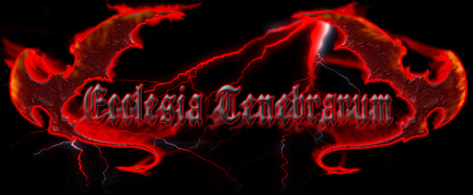

ECCLESIA TENEBRARUM
Здесь Тьма. Здесь Дух Тьмы. Здесь Власть Тьмы.
Ее чертоги возведены здесь усилиями тех, кто есть Тьма.
Сюда вольны войти многие. Здесь останутся те, чье место во Тьме.
Они смогут приумножить Тьму.
Здесь глас и взор тех, кто един с Тьмой. Здесь обитель и союз тех, кто предан Тьме и служит Высшему во Тьме.
Здесь Воля, Сила и Честь тех, кто есть слуги Дьявола и враги бога.
Здесь погибель лжи. Здесь торжество истины.
Здесь цитадель легионов заката и разверстая пасть Аббадона.
Да погибнет свет. Да восстанет Тьма. Да будет так.
Regnum Tenebrarum
Res Satanae

Вэб-ресурс Ecclesia Tenebrarum (Церковь Тьмы) появился в сети в 2003 году с целью нести в мир Идеи Тьмы и призвать Ее племя.
Те, кто стоит за этим именем, категорически отрицают возможность рассматривать их союз, как очередную иерархическую организацию, существующую на принципах, узаконивающих человеческое честолюбие.
Структура самого сайта содержит несколько разделов, в которых представлены оригинальные работы самих участников проекта, отражающие опыт их духовного пути, а также различные документы и книги о Тьме и Темных практиках, как современных авторов, так и неизвестных.
CONTRA DEI считает необходимым дать вам возможность взглянуть во Тьму непосредственно, без нашего вмешательства. Для нас Тьма священна, как и все Ее таинства. Одно из них возможно здесь, при участии того, кто способен смотреть во Тьму и видеть.
Ecclesia Diaboli
От своих начал Тьма присутствует во всех вещах во Вселенной;
во всяком потенциале, в основе всего и в каждом устремлении присутствует темная величина, и в абсолюте собственной сути незыблемо находится Тьма.
Тьма проявляется через материальные стороны бытия и духовные сферы.
Природа Тьмы принимает те формы в своём воплощении, и проявляет себя теми способами, которые способны передать дух Тьмы и сохранить движение, направленное на Её непрекращающееся развитие. На стыке духовного и материального миров порождением и форпостом Тьмы является Церковь Тьмы.
Церковь Тьмы явлена для реализации и развития принципов Тьмы во Вселенной;
Церковь, как Храм и Алтарь, отвечает высшим целям и существует для воплощения Тьмы.
Истоки Церкви находятся вне времени и вне пространства, и потому Церковь не может быть подвластной ни пространству, ни времени. Церковь Тьмы простирается на все планы существующего бытия, и существовала неизменно.
Церковь Тьмы – несокрушимая Цитадель, что существует наперекор всему сущему, как в небесных сферах, так и на земле. В основании Церкви лежит принцип единства и гармонии сил Тьмы.
Церковь Тьмы предстаёт Единой и Неделимой сущностью, сочетанием сущностей и бытия многих, кто есть Тьма в самом своём начале, либо в момент нахождения на своём пике.
Церковь Тьмы – это союз между принадлежащими Тьме по своему выбору и изначально тёмными своей природой.
Церковь предстаёт прежде всего как Идея и обретает плоть через души избранных Тьмой, и реализуется через их деяния. Церковь Тьмы не имеет иных стен, кроме сердец достойных последователей Тьмы, и не имеет алтарей, ибо сама есть Алтарь. Потому Церковь неуязвима, и никогда не смешивается с низменным и человеческим.
Церковь Тьмы не является посредником между человеком и Тьмой, Церковь – Врата, проводник Тьмы в человеке и проводник человека во Тьму.
Церковь Тьмы не может принять в своём сотворении усилий рук человеческих, ибо это путь к Церкви человека. Призванные и изменённые Тьмой способны возвести Храм Тьмы в своей душе, и через исполнение всех мистерий Мрака и принесение даров на Алтарь Тьмы обрести познание Тьмы и стать полноправной Её частью.
Каждая часть Тьмы самостоятельна и правомерна в Церкви. Иерархия Опыта и Деяния узаконивает древние отношения, являя равноправие внутри самой Церкви, и равновеличие перед ликом Тьмы. Изначально и неизменно Церковь явлена для элиты, честной в своём отношении к Тьме.
Церковь Тьмы, как сама сущность, приемлет или не приемлет новых последователей, и сама Тьма устанавливает испытания входящим в Неё.
Вступающим во Тьму станет примером Рыцарство Тьмы...
... nostri cordis altaria ornans...